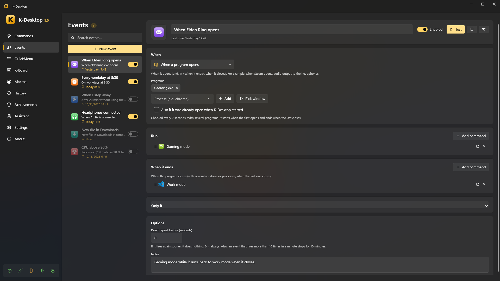

Events
An event is «when this happens, run these commands». Each event has a trigger, optional conditions and the commands it runs; many triggers also have a «When it ends» part (the program closes, you come back to the PC, the device is removed…) with its own commands.

Triggers
| Trigger | When |
|---|---|
| When K-Desktop starts / exits | What used to be «Run on startup / on exit» in each command |
| At a time | Every day or on some days of the week, at the time you say; or on one day only, if you give it a Day |
| Every so often | Every N minutes while K-Desktop runs |
| When a program opens | When it opens; «When it ends», when it closes. When Steam opens, audio to the headphones |
| Program in front | When its window comes to the front, and when it stops being there |
| PC not in use | After some minutes without keyboard or mouse; «When it ends», when you come back |
| Lock, sleep… | When the session is locked or unlocked, or the PC sleeps or wakes up |
| Battery or mains | When a laptop goes on battery or back on mains power |
| Battery level | When the battery goes below a % (or above it); «When it ends», when it is back on the other side |
| Sunrise or sunset | At sunrise or sunset where you are, or some minutes before or after (worked out on the PC; See today shows today's). Without a place: «Where you are» in the assistant options or Windows' location |
| File in a folder | When a file appears (as soon as it stops growing), changes, is deleted or renamed. The commands get its path in {file} |
| Screen plugged in or out | When you plug in or take out a monitor or the TV (also a TV plugged in but not in use yet); the commands get its name in {screen} |
| Call from outside | When another computer, Home Assistant or a script asks for it by name, over UDP or the web |
| Drive connected | When a USB stick, disk or card is connected (and removed) |
| Network | When connecting to a network (or any), or when left without network |
| Device connected | When a controller, keyboard, headset or USB gadget is connected (and disconnected) |
| PC usage | When the CPU, the graphics card, the memory or the graphics memory (VRAM) goes above (or below) a % for a while |
| Audio device | When headphones, a speaker or a microphone are connected, or one becomes the default output or input |
| Calendar event | Some minutes before an event, when it starts or when it ends. See Calendar |
| Mail arrives | When a mail arrives at one of your accounts, and it can save its attachments. See Mail |
| A Telegram message arrives | When yours or a contact's reaches the bot or the account. See Telegram |
Options
- Commands: Add command picks commands you already have; New command creates a hidden one named after the event, adds it and opens it so you can put its actions in.
- Ask an assistant: after the commands, it asks an assistant for something as if you said it (Check the weather and send it to me on Telegram). If the assistant is not on the desktop, nothing happens.
- Only once: the event is deleted after it runs (if it has commands in When it ends, after those). With At a time and a Day, it is «on Friday at 9, just once».
- Programmed by an assistant: what you ask for later («at 7 empty the recycle bin», see Tools) shows here as one more event, with who programmed it and what you approved when you asked. You can change or delete it like any other.
- Conditions (Only if): a list with the same conditions as the If… action (schedule, a program open, the network, the battery, PC usage…), each with The opposite. With several you choose whether all of them must be met or any of them is enough. Each one can be switched off without deleting it and tested (▶) to see whether it is met now. With none, the event always fires.
- Don't repeat before: if it fires again sooner (in seconds), it does nothing.
- Loop protection: an event that fires more than 10 times in a minute stops for 10 minutes, and K-Desktop tells you.
- Each event can be switched off, and run by hand to try it (Test, or
KDesktop.exe --event "Name"). The lightning button creates a command that runs it (to give it a hotkey or a voice phrase). - When, Only if and Options fold; Only if opens by itself when it has something. Times and dates are set with the arrows, the wheel or by typing them (the date also with its calendar).
Calling an event from outside
The trigger Call from outside runs when a call with its name arrives. Case and accents do not matter.
UDP: event door (port 2501, «Remote control» on)
HTTP: POST http://<PC>:2502/api/event
X-KD: 1
Authorization: Bearer <token>
{"name": "door"}
Over UDP it needs Settings → Remote control on with Events allowed (and the key, if there is one, from another computer); over the web, the device needs to be paired (see Phone and remote control).